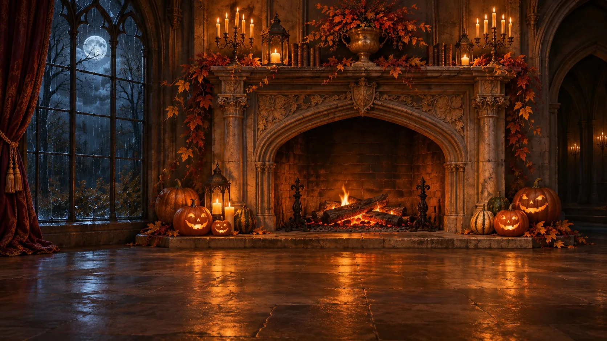

Apple TV
Atrabrume
Pasa una noche de Halloween en una mansión encantada en el Apple TV. Siéntate junto al fuego, sigue las pistas de las tres puertas o elige cuándo aparecerá una figura.

Una velada junto al fuego
Elige quién visita el salón de las calabazas y con qué frecuencia vuelve. Si prefieres una velada tranquila, el invernadero de otoño y el jardín junto al mar son silenciosos y no tienen apariciones.
Las tres puertas
Lee la pista y elige la puerta con el símbolo correcto. Tienes cinco rondas para reunir los tres fragmentos de la llave.
Una aparición programada
Elige el esqueleto de la cripta, la figura de la ventana o el rostro de las brasas. Ajusta el tiempo de espera de cada aparición y reproduce la secuencia una vez o en bucle.